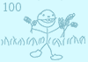

All About Oats! January 17th, 2013  View image: fullsize (1600 × 1132 pixels, 37 kB) half (17 kB) quarter (9 kB) eighth (5 kB) The common oat (Avena sativa) is a species of cereal grain grown for its seed, which is known by the same name (usually in the plural, unlike other grains). While oats are suitable for human consumption as oatmeal and rolled oats, one of the most common uses is as livestock feed. Oats typically make up a part of the daily diet of domestic horses, about 20% of daily intake or smaller, and are regularly fed to cattle, as well. Oats are also used in some brands of dog food and chicken feed. Oat seeds are commonly marketed as cat grass to cat enthusiasts, since cats readily harvest and eat tender young oat, wheat, and some other grass sprouts. (taken from Wikipedia)